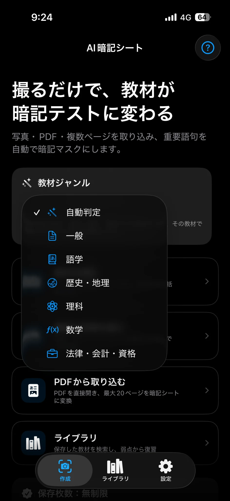
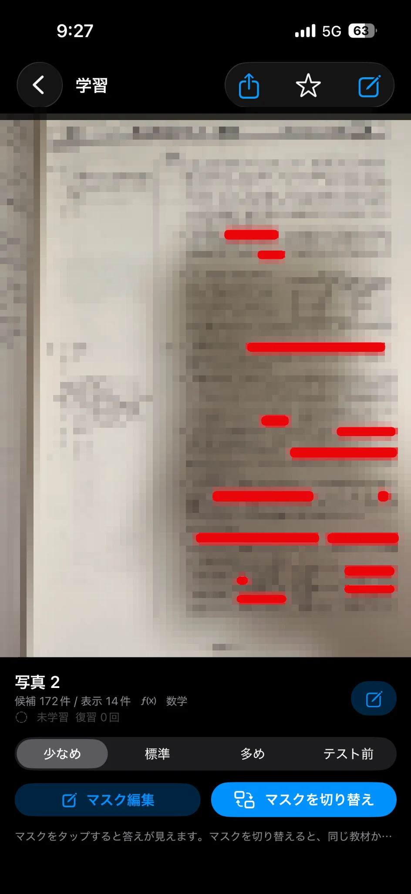
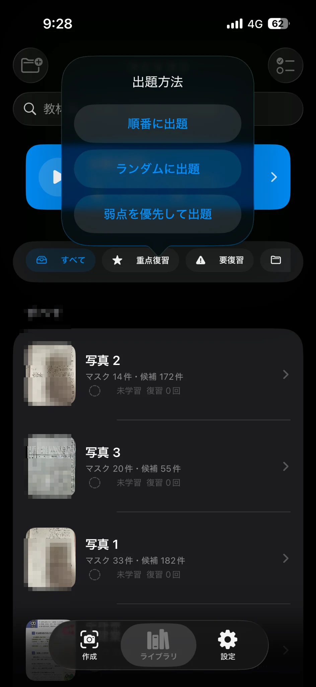
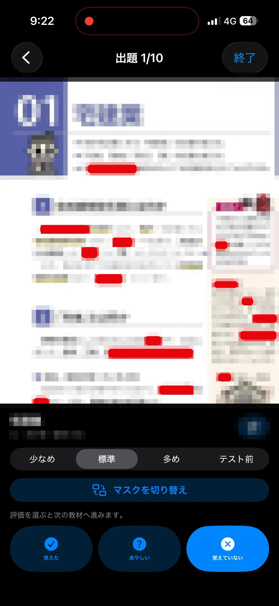

問題を作ってから勉強
- 重要語句を一つずつ入力
- 図や表の位置関係が消える
- 教材が増えるほど準備が大変
教科書、学校プリント、ノート、資格教材
写真やPDFを取り込むと、重要語句を見つけて暗記マスクを自動生成します
3枚まで無料 ｜ 継続利用は800円の買い切り ｜ サブスクなし

暗記問題を作る時間を、覚える時間へ
単語帳を一つずつ作る代わりに、教材を取り込むだけ AI暗記シートが文字を読み取り、覚える候補を選び、元のレイアウト上にマスクを重ねます
こんな学習に
学校の勉強から資格取得まで普段使っている教材を変えずに、暗記と復習へ進めます
学校のテスト
教科書、授業プリント、ノートを取り込み、先生が扱った範囲をそのまま繰り返し確認できます
受験対策
歴史の重要語句、理科の用語、地理資料など、図や表を含む教材の位置関係を保って覚えられます
社会人の学習
法律、会計、IT、医療などのテキストやPDFを取り込み、通勤時間やすき間時間の復習に活用できます
語学学習
単語帳を作り直さず、手持ちの教材から覚えたい箇所を隠して、何度でもセルフテストできます
使い方は3ステップ
複数ページの教材も、写真もPDFも無料で試せるので、手元の教材で使い心地を確認できます
カメラ撮影、最大20枚の写真・スクリーンショット、PDF直接取込に対応
教材ジャンルに合わせて重要語句を選び、元のレイアウト上へ暗記マスクを重ねます
順番、ランダム、弱点優先から選択学習結果を記録し、必要な教材を繰り返せます
学習を続けるための機能
内容を自動で分析し、重要になりやすい語句を優先 教材ジャンルを指定すれば、抽出の方向性をさらに調整できます
不要なマスクを削除し、隠したい箇所を追加少なめ・標準・多め・テスト前を切り替えられます
教材名、メモ、OCR文字、抽出語句を検索フォルダや学習状態で絞り込めます
学習結果と復習回数を保存「覚えていない」「あやしい」教材を先に出題できます
教材、画像、フォルダ、マスク、学習履歴をまとめてバックアップマスク付き画像の共有にも対応します
画面で見るAI暗記シート
画像内の教材部分には、公開用のモザイク処理を施しています




オンデバイス処理
文字認識、重要語句抽出、暗記シート生成、保存を端末内で処理します 教材画像や認識した文字を、外部AIサービスや自社サーバーへ送信しません
iOS 26以降では、Appleの新しい文書認識機能を活用し、 文字だけでなく表・段落・リストなどの構造をより精密に解析します iOS 16〜25でも主要機能を利用できます
長く使える買い切り
学習アプリでよくある月額・年額のサブスクリプションではありません 長くリーズナブルに活用してもらうため、保存枚数制限の解除は 800円の買い切りにしました
3枚まで無料で試してから購入できます購入後の月額料金はありません
よくある質問
はいiOS 16以降のiPhoneとiPadに対応していますPDFや複数画像の取り込みも利用できます
教科書、学校プリント、ノート、問題集、資格教材、スクリーンショット、PDFなどに利用できます印刷文字を中心に、写真の明るさや傾き、複雑な表、手書き文字によって認識結果は変わります
はい不要なマスクの削除、隠したい語句の追加、マスク量や別パターンへの切り替えができます
いいえ文字認識と重要語句抽出は端末内で処理し、教材画像や認識文字を外部AIサービスや自社サーバーへ送信しません
準備ではなく、暗記を始めよう
無料で試せますiPhoneとiPadで利用できます